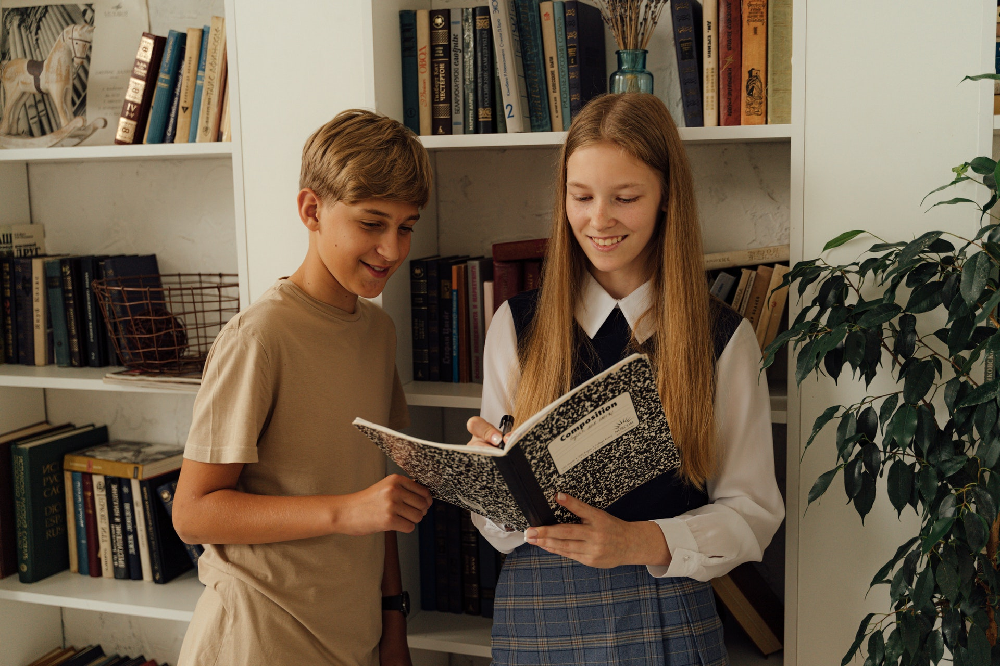

Noutati
Felicitari de final de curs

Dragi elevi,
Astăzi, încheiem încă un capitol important în călătoria voastră academică. Finalul acestui an școlar
marchează nu doar încheierea cursurilor, ci și o etapă semnificativă în parcursul vostru
educațional.
În numele întregii administrații a liceului nostru, vă transmitem cele mai sincere felicitări pentru
efortul și angajamentul de care ați dat dovadă în această perioadă. Anul acesta a fost cu siguranță
plin de provocări și obstacole, dar fiecare dintre voi a demonstrat reziliență și determinare în
fața acestora.
Fiecare zi petrecută în școală reprezintă o oportunitate de a învăța și de a crește, iar voi ați
arătat că sunteți gata să vă asumați aceste provocări cu curaj și încredere în propriile voastre
capacități.
În această zi de sărbătoare, sărbătorim nu doar realizările voastre academice, ci și maturitatea și
dezvoltarea personală pe care ați experimentat-o în timpul acestui an școlar.
Felicitări pentru succesul vostru și pentru toate realizările remarcabile! Sperăm că vă veți bucura
de vacanța de vară și că veți reveni în toamnă pregătiți să vă îndepliniți visele și să continuați
să vă realizați potențialul.
Cu dragoste și mândrie,
Administrația Liceului
Ultimul sunet 2024

Dragi elevi,
Dragi elevi, cadre didactice și personal școlar,
Cu emoție și satisfacție, vă invităm să vă alăturați nouă pentru un moment de reflecție și
celebrare. Suntem încântați să anunțăm că ultimul sunet al acestui an școlar va avea loc vineri,
31 mai, la 8.00 Acesta va marca încheierea cu succes a unui an plin de provocări și realizări
remarcabile.
Vă invităm să ne reunim cu toții în [locul desemnat], pentru a reflecta asupra experiențelor
noastre, pentru a ne aminti de momentele minunate și pentru a sărbători împreună prietenia și
perseverența care ne-au ghidat în acest parcurs educațional.
Vă așteptăm cu inimile deschise și suflete pline de recunoștință pentru a marca împreună acest
moment special în istoria școlii noastre.
Cu drag,
Echipa școlii